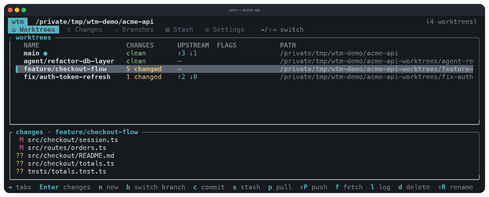
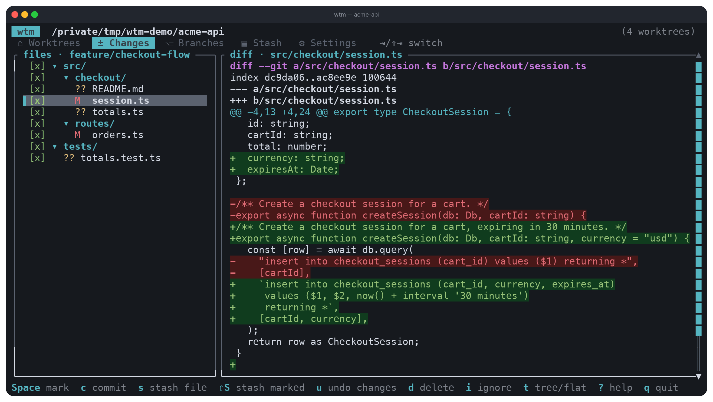
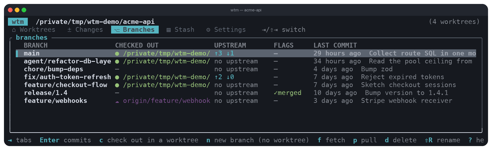
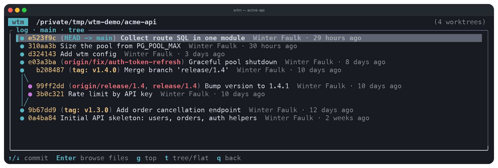

wtm
A friendly top-level interface for git worktrees, built for working with AI agents on multiple branches at once.
What it is
wtm gives you create, list, inspect, and remove worktrees without needing to know the git commands behind them, and it handles the per-repo setup each new worktree needs (copying .env files, running npm install, whatever a repo requires). It goes beyond worktrees too: commit, stash, pull, push, fetch, branches, and log all work by worktree name instead of paths and flags, which is handy whether you're doing the work yourself or an agent is.
The TUI is what you get running wtm with no arguments inside a repo. It's five tabs (Worktrees, Changes, Branches, Stash, Settings) covering the worktree list, a diff viewer, branch management, stashing, and repo settings, with everything reachable by keyboard or mouse. Worktrees and branches whose work has landed in the default branch get flagged ✓merged so you know what's safe to clean up.
The CLI is the scriptable side: every subcommand supports --json output, so it's built to be driven by a script or an agent as easily as by a person. And wtm mcp runs an MCP server over stdio, exposing the same worktree, commit, merge, stash, remote, and branch operations as MCP tools, so an agent can call them directly instead of shelling out.
Features
- Worktree management: create, list, inspect, and remove worktrees, with automated per-repo setup like copying
.envfiles and running install commands - Everyday git by name: commit, stash, pull, push, fetch, and log, all addressed by worktree name instead of paths and flags
- Status flags: worktrees and branches show
unpushed/behindvs upstream,same/changed/outdatedvs their base,✓merged, andlocked - Conflict resolver: a guided flow for merge, rebase, update, cherry-pick, and stash-pop conflicts, showing OURS/THEIRS hunks side by side with hand-editing support
- Commit log as a tree: branch and tag names marked on the commits they point to, so forks and merges are visible at a glance
- JSON everywhere: every CLI command takes
--json, so an agent can drive the whole workflow - MCP server:
wtm mcpexposes worktree, commit, merge, stash, remote, and branch operations as MCP tools over stdio - Self-updating:
wtm upgradechecks GitHub releases, verifies the SHA-256 checksum, and installs itself - Configurable setup: a per-repo
.wtm.tomlcontrols where worktrees go, what files get copied into them, and what setup commands run
Screenshots




Getting started
Install the latest release (macOS Apple Silicon/Intel, Linux x86_64/ARM64), then initialize a repo:
curl -fsSL https://raw.githubusercontent.com/faulker/wtm/main/install.sh | bash
wtm init [--force] # guided setup, writes .wtm.toml